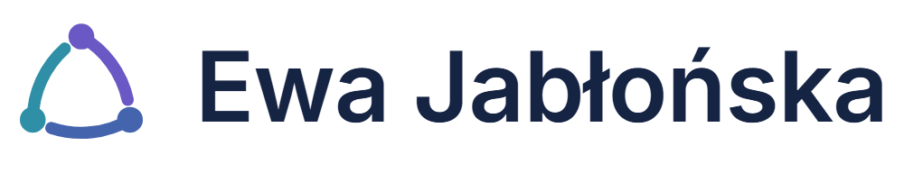
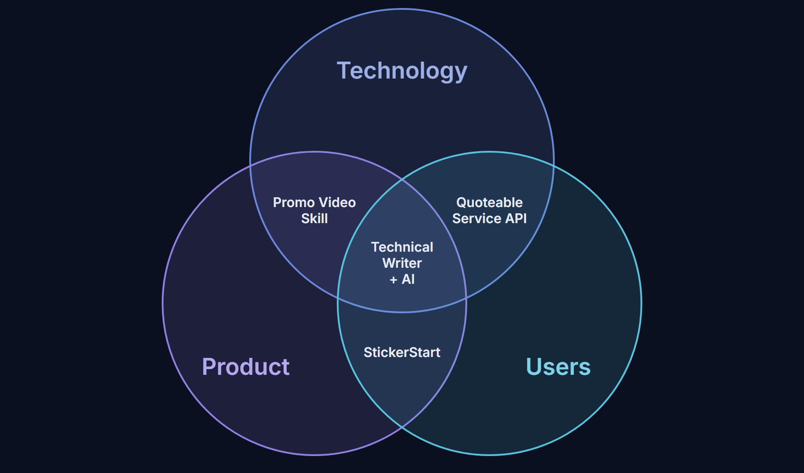
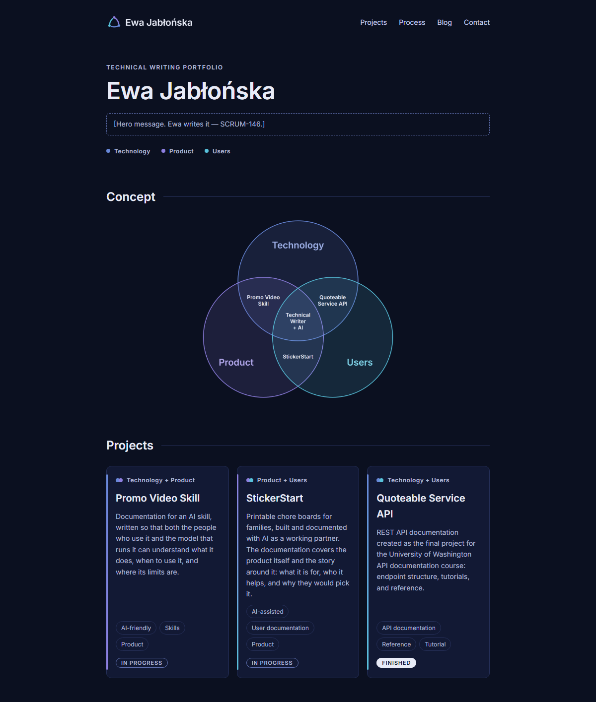
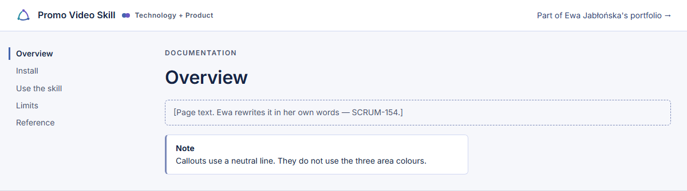
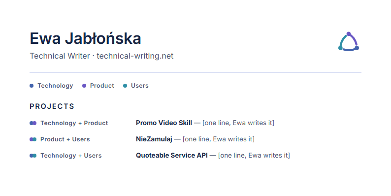
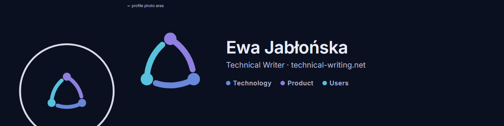
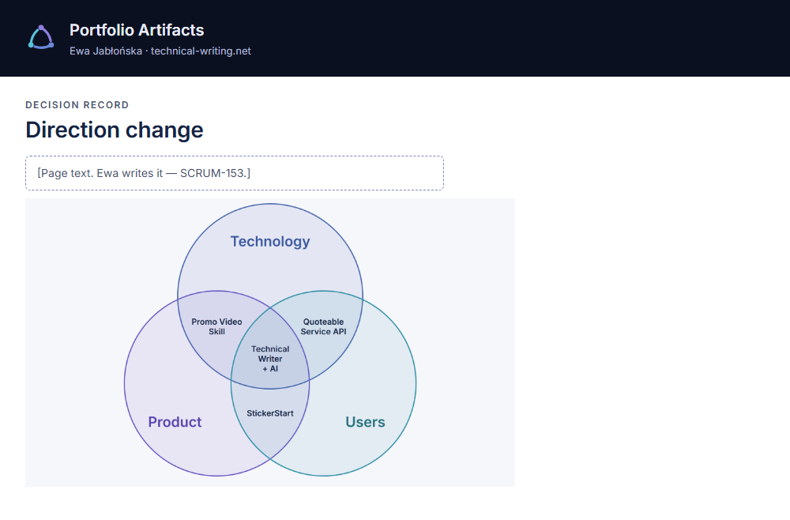

Edition v1 · approved 12 November 2026Brand book
The brand is dark first. This PDF uses the light mode so that it prints well. The HTML book shows the dark mode.
The rules for how the portfolio looks and sounds: on the site, on docs sites, on the CV and LinkedIn, and in Confluence.
Ewa chose the direction, the logo concept and the type, and approved this edition on 12 November 2026. The files are checked but not yet applied to the live site.
1
A company that hires for AI-assisted documentation. A hiring manager or team lead who reads the page fast.
For teams that build documentation with AI, Ewa Jabłońska is the technical writer who connects technology, product, and users. Docs stay in the centre. She sets the direction for AI work and checks the result.
| The brand is | The brand is not |
|---|---|
| Clear | Cold |
| Structured | Bureaucratic |
| Curious about AI | Hyped |
| Human | Casual |
| In charge | Loud |
The positioning is an internal sentence. It is not site copy. Ewa writes the hero message and the other narrative texts (D19).
2
Plain, direct, and human. Short sentences. The reader's understanding comes first.
| Text type | Examples | Who writes | AI's role |
|---|---|---|---|
| Narrative | Hero message, Concept, Process, blog intros, blog posts, case studies | Ewa | Proofreads only: typos, grammar, clarity. AI does not rewrite and does not add content. |
| Functional | Navigation, buttons, card descriptions, meta titles and descriptions, alt text, 404 page, cookie banner | AI drafts | Drafts in this voice. An independent AI review checks the draft. |
Ewa approves every text before it goes live. Ewa can ask AI for a draft of a narrative text; the copy deck records the exception.
Lists use the Oxford comma: "technology, product, and users" (D20). Page titles: "{page} | Ewa Jabłońska".
| Trait | In practice | Boundary |
|---|---|---|
| Clear | One idea per sentence. The same term for the same thing. | Speak to the reader as "you". |
| Structured | Headings say what the section does. Steps are in order. | No filler headings, no formal padding. |
| Curious about AI | Say what AI did, what Ewa did, and what Ewa checked. | No "revolution", no "supercharge". |
| Human | First person. Honest about what is in progress. | No emoji, no exclamation marks. |
| In charge | Active voice: Ewa sets, decides, reviews. | No superlatives about herself. |
"Your job is not to impress the reader. Your job is to make sure they understand."
Blog: If You Love Writing, Technical Writing Might Frustrate You
"Technical writing does not exist in isolation."
Home page, Concept section
| Concept | Use | Avoid |
|---|---|---|
| The three areas | Technology, Product, Users | Tech, customers, audience |
| Ewa's role with AI | directs, reviews, checks | prompts, generates |
| Readers | people and AI | humans and LLMs |
| Project state | Finished, In progress | WIP, beta |
| Name | Ewa Jabłońska (with Polish letters) | Ewa Jablonska |
Full guide: tone-of-voice.md. Tagline and hero line: not in scope; Ewa writes them.
3
Three arcs with nodes. Each arc starts at a node and stops before the next node. Nothing in the centre.
Default: on dark background
On light background (darker colour set)
One colour, white
One colour, ink
Small variant, 24 and 16 px
Favicon and round avatar
| Rule | Value |
|---|---|
| Minimum size | Standard mark: 32 px. From 16 to 31 px use the small variant. Print: 8 mm (proposed, not tested on paper). |
| Clear space | One node diameter on each side. |
| Colour order | Top node and right arc: Product. Right node and bottom arc: Technology. Left node and left arc: Users. |
| Backgrounds | Brand dark, brand surface, brand light, white. On other colours use one colour. |
| Lockup | Mark 56 for text 36. Gap: a quarter of the mark width. Inter 600. |
Something in the centre
Glow or shadow
Stretch or rotate
Dark-mode colours on light
Details and file list: logo/usage.md. Test sheet: logo/test-sheet.png.
4
Colour is a code. Each area has one colour. Do not use the area colours for anything else.
Technology#6888D9 dark · #4464AD light
Product#8E7FE0 dark · #6A58C4 light
Users#58C1DB dark · #2F8FA6 light
Centre: Technical Writer + AI#FFFFFF dark · #162444 light
Background#0B1020
Surface#121934
Ink#E8EBF7 · 15.91:1
Muted text#AFB7D4 · 9.50:1
Line#26305A · decoration
Functional line#5F70B0 · 3.99:1
Link#C5CEF0 · 12.13:1
Surface raised#1A2347
Background#F6F7FB
Surface#FFFFFF
Ink#162444 · 14.31:1
Muted text#4A5370 · 7.10:1
Line#D0D7F2 · decoration
Functional line#7A88B8 · 3.24:1
Link#2C4376 · 9.03:1
Users label text#25707F · 5.29:1
#2F8FA6 is 3.50:1. Use it for shapes. For small text use #25707F.Ratios are calculated against the mode background. Calculated contrast is not an accessibility audit. Full table: palette.md. Tokens: tokens.css.
5
One family: Inter. Open licence (SIL OFL 1.1). Weights 400, 500 and 600.
Technical Writing Portfolio
Ewa Jabłońska
Section heading, 24 px, weight 600
Card title, 20 px, weight 600
Body text, 16 px, weight 400, line height 1.6. A line has 68 characters at most. Polish letters: ą ć ę ł ń ó ś ź ż Ą Ć Ę Ł Ń Ó Ś Ź Ż. Digits: 0123456789.
Small text, 14 px, for card text and captions.
| Role | Size | Weight | Notes |
|---|---|---|---|
| H1 | 32–48 px | 600 | Tracking −0.01em |
| H2 | 24 px | 600 | A thin rule follows it on the site |
| H3 | 20 px | 600 | Card titles |
| Body / lead | 16 / 18 px | 400 | Line height 1.6 |
| Label | 12 px | 600 | Upper case, tracking 0.12em, 4 words at most |
| Code | 0.9em | 400 | System monospace. Only for code, never for labels. |
Details and licence: typography.md, fonts/OFL.txt.
6
The writer stands where technology, product, and users meet. The brand shows the meeting points: a node marks a point, a line joins points.
Technology
Product
Users
One node and the area name.
Technology + Product
Product + Users
Technology + Users
Two nodes that overlap.
Finished In progress
Status is neutral. It does not use area colours.
Documentation for an AI skill, written so that both the people who use it and the model that runs it can understand what it does, when to use it, and where its limits are.

Three outlined circles with a light fill. The project name sits inside the area where its two circles meet. The centre says "Technical Writer + AI". No dots and no lines in the diagram: the skill words ("docs for people and AI") are on the project cards. A light version exists for Confluence and print.
Details: graphic-system.md.
7
Mockups for the four channels. Text in dashed boxes is a placeholder: Ewa writes it.





Editable source: applications/index.html.
8
| Item | File | Status | Decision |
|---|---|---|---|
| Positioning | brief.md | working | Confirmed by Ewa |
| Voice guide | tone-of-voice.md | working | Describes Ewa's voice; not reviewed by Ewa yet |
| Creative direction | explorations/2026-11-12-directions/ | concept, selected | A · Junction, approved by Ewa |
| Mark | logo/source, logo/exports | production | logo-01/A, approved final |
| Lockup | logo/exports/lockup-*.png | working | Routine; lettering is not outlined |
| Palette and tokens | tokens.css, palette.md | production | Approved with the book |
| Typography | typography.md, fonts/ | production | Inter only, chosen by Ewa |
| Diagram | graphic/venn-*.svg, .png | working | Content from SCRUM-147; text size on a phone open |
| Applications | applications/ | mockup | Not built on the live site |
The live site still shows the old identity (commit 60b8994): the raster logo with the briefcase, the old Venn diagram and the old colours. Nothing in this book is applied yet. The plan for the change is in rebranding-plan.md.
Start here: delivery/START-HERE.md. All decisions: decisions.md.